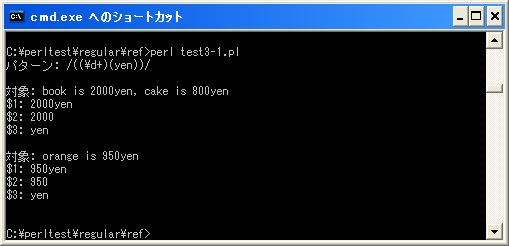

- Home ›
- Perl入門 ›
- Perlにおける正規表現 ›
- マッチした部分の取得
マッチした複数の文字列を取得($1, $2, ..)
対象の文字列に対してパターンがマッチした場合に、パターンの中の一部分を括弧()で括ることで、括弧内のパターンにマッチした部分文字列を取得することが出来ます。
/¥d+yen/
上記のようなパターンがあった場合に、「¥d+」及び「yen」にそれぞれマッチする部分を分けて取得してみます。
/(¥d+)(yen)/
上記は「¥d+yen」と言うパターンに対して「¥d+」と「yen」をそれぞれ括弧()で括っています。マッチが成功すると最初の括弧で囲まれたパターンにマッチした部分が特別な変数「$1」に格納され、次の括弧で囲まれたパターンにマッチした部分が変数「$2」に格納されます。
括弧内のパターンにマッチした値は特別な変数「$1」「$2」..に格納される
次の例を見てください。対象の文字列が「book is 2045yen」の場合にパターンを「(¥d+)(yen)」としています。
my $str = "book is 2045yen";
if ($str =~ /(¥d+)(yen)/){
print "$1¥n";
print "$2¥n";
}
上記の場合、パターン全体は「2045yen」にマッチします。マッチに成功した時、最初の括弧内に記述されたパターン「¥d+」にマッチする「2045」が変数「$1」に格納されます。また、次の括弧内に記述されたパターン「yen」にマッチする「yen」が変数「$2」に格納されます。
今回は2つ括弧を使用していますが3つ以上の括弧を記述した場合は「$3」「$4」といった変数に格納されていきます。
$&の代わりにマッチした全体を取得する
前述したとおり変数「$&」を使用すると若干処理効率が悪いと言われています。そこで変数「$&」を使用する代わりにパターン全体を()で囲うことで「$&」の代わりに「$1」を使用することが出来ます。
my $str = "book is 2045yen";
if ($str =~ /(¥d+yen)/){
print "$1¥n";
}
括弧と変数の関係
マッチした文字列は順に「$1」「$2」と格納されていきます。格納される順番はパターンの中で「(」が現れた順となります。
/(¥d+)(yen)/ $1 ¥d+ $2 yen
またパターンの中で括弧()は重複した範囲を括ることが出来ます。例えば次のような場合です。
/((¥d+)(yen))/
この場合、格納される変数と対応するパターンの関係は次の通りです。
/((¥d+)(yen))/ $1 <-> ¥d+yen $2 <-> ¥d+ $3 <-> yen
パターンの中で最初に現れる「(」はパターン全体を括っています。2番目の「(」は「¥d+」を、3番目の「(」は「yen」を括っています。よって各変数に対応するパターンは上記のようになります。対象文字列が「book is 2045yen」だった場合、変数に格納される値は次の通りです。
/((¥d+)(yen))/ $1 <= 2045yen $2 <= 2045 $3 <= yen
サンプルプログラム
では簡単なプログラムで確認して見ます。
use strict;
use warnings;
use utf8;
binmode STDIN, ':encoding(cp932)';
binmode STDOUT, ':encoding(cp932)';
binmode STDERR, ':encoding(cp932)';
print "パターン: /((¥¥d+)(yen))/¥n¥n";
&check("book is 2000yen, cake is 800yen");
&check("orange is 950yen");
sub check{
my ($str) = @_;
if ($str =~ /((¥d+)(yen))/){
print "対象: $str¥n";
print "¥$1: $1¥n";
print "¥$2: $2¥n";
print "¥$3: $3¥n¥n";
}
}
上記を「test3-1.pl」の名前で保存します(文字コードはUTF-8です)。そしてコマンドプロンプトを起動し、プログラムを保存したディレクトリに移動してから次のように実行して下さい。

( Written by Tatsuo Ikura )

著者 / TATSUO IKURA
初心者～中級者の方を対象としたプログラミング方法や開発環境の構築の解説を行うサイトの運営を行っています。